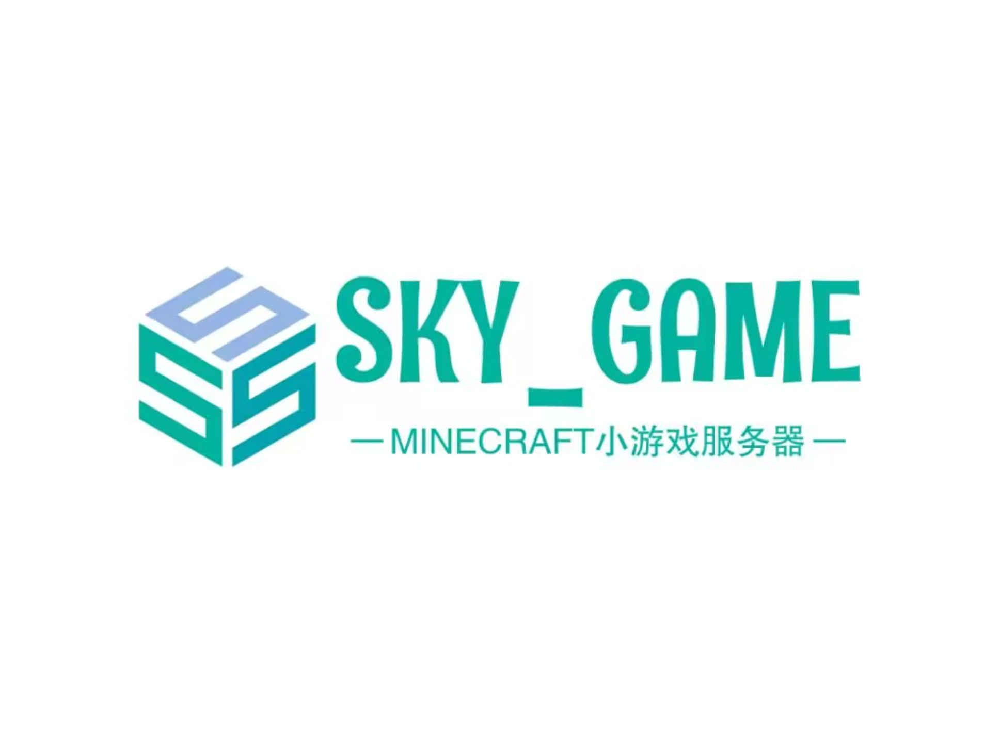

欢迎你来到SKY_GAME Network服务器！
本网页为对SKY_GAME Network服务器的宣传和展示.
关于我们
SKY_GAME服务器是一个在Minecraft国际版运营的小游戏服务器. 我们服务器提供了丰富多样的游戏模式，如生存、PVP、休闲等等小游戏，让玩家可以在不同的游戏中体验到不同的乐趣和挑战.
此外，SKY_GAME还提供了一个友好的社区环境，让玩家可以与其他玩家交流、分享经验和建议. 我们服务器还采用了最新的安全措施和防作弊措施，以保证游戏的公平性和玩家的安全性.
如果你是一位喜欢PVP或小游戏的玩家，那么SKY_GAME绝对是你值得一试的小游戏服务器. 加入我们的社区，与其他玩家一起享受在SKY_GAME小游戏服务器的快乐吧！
游戏介绍
- 规则1：请遵守游戏规则。
- 规则2：禁止使用作弊程序。
- 规则3：尊重其他玩家。
服务器规则
提供一些玩家指南，例如如何加入服务器、设置和基本操作。
交流群&交流频道
创建一个论坛或社区，让玩家可以交流、分享经验和建议。
更多
提供联系方式，例如电子邮件地址或在线表单。